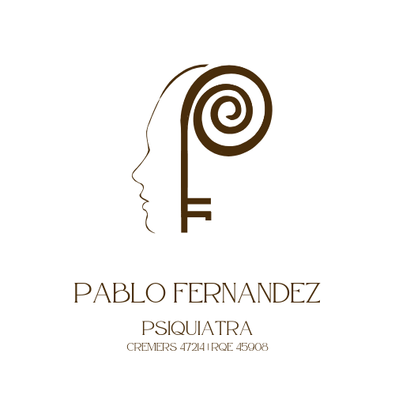

Dr. Pablo Fernandez AgendarMédico especializado no cuidado da saúde mental de crianças e adolescentes. Sua atuação é pautada pelo acolhimento humanizado, aliando a precisão técnica da medicina baseada em evidências com a sensibilidade necessária para tratar os desafios do desenvolvimento.
Suporte completo para os desafios do desenvolvimento e da vida adulta.
Avaliação diagnóstica rigorosa e tratamento multimodal para o Transtorno de Déficit de Atenção e Hiperatividade em crianças e adultos.
Acompanhamento longitudinal focado na promoção de autonomia, desenvolvimento de habilidades sociais e suporte à família.
Tratamento de quadros ansiosos, depressivos e alterações de humor que impactam o bem-estar e a funcionalidade.
Manejo do Transtorno Opositor Desafiador com estratégias comportamentais e forte orientação parental.
Estabilização do humor e prevenção de crises, visando a qualidade de vida e o equilíbrio emocional.
Avaliação e acompanhamento terapêutico para padrões comportamentais persistentes e dificuldades interpessoais.
* Os tópicos acima representam algumas das principais áreas de atuação. O atendimento psiquiátrico abrange diversas outras demandas da saúde mental.
Os atendimentos presenciais ocorrem em Porto Alegre/RS e Pelotas/RS. Além disso, são realizados atendimentos online para pacientes de todo o Brasil.
A consulta online ocorre por videochamada através de plataforma segura, com a mesma qualidade e rigor técnico da consulta presencial, incluindo emissão de receitas digitais.
A primeira consulta tem duração aproximada de 1 hora, sendo dedicada à compreensão do histórico e do quadro atual. As consultas subsequentes (acompanhamento) duram até 45 minutos.
No modelo de acompanhamento psiquiátrico adotado, cada encontro é uma consulta clínica completa, com avaliação e ajustes terapêuticos. Por isso, não trabalhamos com o formato de "retorno" gratuito; cada atendimento corresponde a uma nova consulta.
O horário é reservado exclusivamente para o paciente. Em caso de falta sem aviso prévio ou fora do período de tolerância, o valor integral da consulta será cobrado.
Não. Os atendimentos são realizados exclusivamente de forma particular. Isso garante o tempo necessário para uma avaliação detalhada e um cuidado individualizado em cada consulta.
Sim. Realizamos avaliações psiquiátricas para investigação de condições do neurodesenvolvimento. O processo inclui análise clínica, entrevistas e, se necessário, o estudo de avaliações prévias.
Não. O diagnóstico e a eventual emissão de laudos são resultados de um processo de avaliação clínica. Não é possível garantir a emissão de documentos ou um diagnóstico específico antes da conclusão dessa análise.
A emissão de documentos médicos é feita obrigatoriamente durante a consulta, como parte do acompanhamento. Em casos específicos e previamente combinados, pode ser emitida uma receita intermediária, desde que a próxima consulta já esteja agendada.
O foco é uma avaliação cuidadosa do desenvolvimento, aspectos familiares e escolares. A consulta inicial pode envolver momentos com os pais e com o paciente, juntos ou separadamente, dependendo da idade e da necessidade clínica.
O sigilo é fundamental para o sucesso do tratamento. Os responsáveis são informados sobre as diretrizes e ajustes terapêuticos, mas o espaço de fala individual do adolescente é preservado. O sigilo só é quebrado em situações de risco à integridade do paciente ou de terceiros.
Sim, quando necessário, podem ser solicitadas informações escolares ou de outros profissionais que acompanham o paciente. Reuniões específicas com a escola ou equipe multidisciplinar podem ser agendadas como parte do acompanhamento.